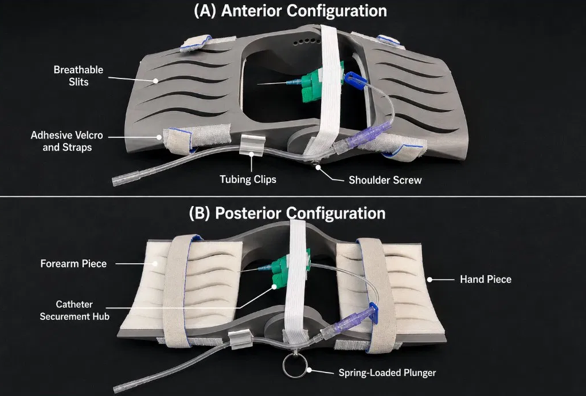

A structurally adaptable wrist support device designed to improve patient comfort and procedural consistency during radial arterial line placement.
Radial arterial line placement is a common clinical procedure requiring the wrist to be held in consistent dorsiflexion to tension the radial artery and bring it close to the skin surface for catheter access. Currently, this is often achieved with improvised padding or manually held positioning — both of which introduce variability in wrist angle, insertion site stability, and patient comfort across providers and patient anatomies.
This junior design project addresses that gap with a purpose-built wrist support device. The design maintains optimal wrist extension angle, stabilizes the insertion site, and accommodates variation in patient anatomy through structural adaptability — ensuring reliable catheter access geometry for clinical staff across a range of use conditions.

Wrist support device — dorsiflexion positioning with adjustable anatomical fit
The design process began with defining the clinical problem precisely: what wrist angle is optimal for radial arterial access, what forces and moments act on the wrist during the procedure, and what anatomical variation exists across the patient population. These requirements drove the structural and geometric design decisions throughout the project.
The device was modeled in SolidWorks through iterative concept generation and refinement. The geometry needed to maintain a fixed dorsiflexion angle while providing a stable platform under procedural loading. Key design features include a contoured wrist bed, adjustable strap anchors, and a flat base for table mounting stability.
Physical prototypes were produced using a combination of FDM 3D printing for structural components, laser cutting for flat profile parts and fixtures, and soldering for any electronic or sensor integration elements. The multi-method fabrication approach allowed different components to be optimized for their specific functional requirements — printed parts for complex geometry, laser-cut parts for precision flat profiles.
A key design requirement was accommodating variation in patient anatomy — hand size, wrist width, and soft tissue compliance all vary significantly across patient populations. The device emphasizes structural adaptability through adjustable geometry rather than a fixed one-size form, ensuring consistent catheter access positioning regardless of individual patient anatomy. This distinguishes it from simpler fixed-angle positioning aids.